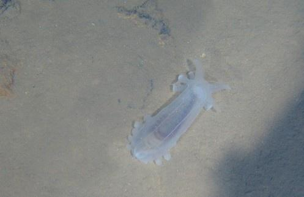

Related pictures
-

- 

1. it has a maximum diving depth of 7,000 meters in the same type in the world, which means that the submersible can be used in vast sea areas accounting for 99.8% of the world's ocean area.
2. it has stable hovering for the operation target, which provides reliable guarantee for the submersible to complete high-precision operation tasks.
3. it has advanced underwater acoustic communication and seabed micro-appearance detection capabilities, and can transmit images and voice at high speed to detect small targets on the seabed.
4. equipped with a variety of high performance, to ensure manned submersible in special marine environment or seabed geological conditions to complete fidelity sampling and submersible coring and other complex tasks.
Near-bottom automatic navigation and hovering positioning, high-speed underwater acoustic communication, and the capacity of oil-filled silver-zinc storage battery are known as the three technological breakthroughs of "Jiaolong":
just like driving, the driver's foot is always on the accelerator, which inevitably leads to fatigue. The pilot of Jiaolong is lucky. It has the function of automatic navigation. After the pilot sets the direction, he can safely conduct observation and scientific research.
Wang Xiaohui said that the Jiaolong can complete three kinds of automatic navigation: automatic directional navigation. After the driver sets the direction, the Jiaolong can navigate automatically without worrying about deviation. Automatic altitude setting navigation, this function can keep the submersible at a certain height with the seabed. Despite the ups and downs of the seabed, the automatic altitude setting function can make the Jiaolong sailing in a complex environment easily and avoid collision. The automatic depth setting function can keep the Jiaolong at a fixed distance from the sea surface.
once the target is found on the seabed, the "jiaolong" does not need to sit on the bottom like most foreign deep submergence vehicles, but is driven to the corresponding position by the driver, and the "fixed" position is kept at a fixed distance from the target, which is convenient for the manipulator to operate. Under the internal and external interference such as submarine currents and so on, which cause the Jiaolong to swing and the manipulator movement drives the whole submersible to swing, it is commendable to be able to "hover" accurately. In the published news, no foreign submersible has similar functions.
land communication mainly relies on electromagnetic waves, which can reach the speed of light. However, this sharp weapon is useless in the water. Electromagnetic waves can only penetrate a few meters deep in the sea. "Jiaolong" dived into the deep sea for thousands of meters. In order to keep in touch with the mother ship, scientists developed a world-class high-speed underwater acoustic communication technology using sonar communication. This technology needs to solve many difficult problems. For example, the underwater sound propagation speed is only about 1500 meters per second. If it is 7,000 meters deep, it takes nearly 10 seconds to shout a word and the sound delay is very large. The bandwidth of acoustic transmission is extremely limited and the transmission rate is very low. In addition, the propagation effect of sound in non-uniform objects is not ideal, and the sea water density is different, the temperature is different, and the sea bottom echo conditions are also different. In addition, the noise on the mother ship and the submersible makes it more difficult to effectively extract signals in complex environments.